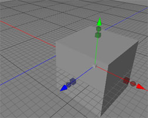
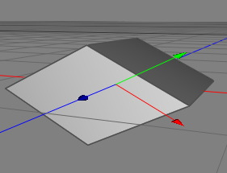
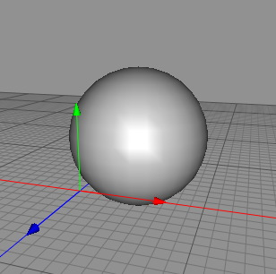

Coord System Tool
The purpose of the coord system tool is to reset a previously transformed objects central point of origin, whilst keeping the transformations made in place. This is useful for when you need to group objects together and have them all moving around one single origin.
The "shear problem":
Cheetah3D works with a transformation hierarchy. That means that every object has it's own coordinate system. The objects coordinate system is given through it's position, scale and rotation values relative to the parents objects coordinate system. You can now do the following.
- Create a Folder object and a box object.
- Drag and drop the box object into the folder object.
- Set the Y-scale value of the folder object to 0.5.
- If you now rotate the box object it will be sheared.
- If you now drag and drop the box out of the folder, while holding the SHIFT key pressed. The boxes global position and shape won't change. And therefore it will be still sheared. To make the box faces perpendicular again you can either use the "burn shear/scale" or the "reset shear" command of the coord system tool.
Modes
This tool works on polygon objects in object mode.


To use the coord system tool just select "Tools Coord System" from the menu. The coord system tool will now show up in the tool properties. To perform one of the different actions just click on one of the buttons (see below for description). The coord system tool is always just performed on the current object.
Coord System" from the menu. The coord system tool will now show up in the tool properties. To perform one of the different actions just click on one of the buttons (see below for description). The coord system tool is always just performed on the current object.
Keys
- none
Properties
- burn transform: Burn is the hole object transformation into the polygon or spline data. This command only works on editable spline and polygon objects. Afterward the transformation properties of the object are reset.
 
By using the burn transform tool, the moved cube stays in it's transformed position,
but it's origin point is now set back to 0,0,0 (right)
- burn shear/scale: Burns the shear and the scale components of the objects transformation into the polygon or spline data. Afterward the shear is set to (0,0,0) and the scale is set to (1,1,1). This command only works on edit able spline and polygon objects.
 
The left object suffered under the "shear problem". If you now burn in the shear and scale it's internal
shear component the shape of the object won't change. Just it's coordinate system.
- reset shear: Resets the internal shear transformation component of the object.

The left object suffered under the "shear problem". If you now reset it's internal
shear component the shape of the object will change. But is coordinate system is
perpendicular therefore.
- center pivot point: Moves the pivot point (center of rotation) of an object is the geometrical center of an object.
 
In the left object the pivot point is outside of the geometry. But especially for animation it is
often better if the pivot point is in the center of the object. Using the "center pivot point"
command moves the pivot point into the center of the geometry.
- reset pivot point: Sets the pivot point to (0,0,0) while maintaining the global position of the object.
- burn pivot point: Burns the pivot point into the geometry. This tool therefore only works on spline and polygon objects. After burning in the pivot point the pivot point is set back to (0,0,0).